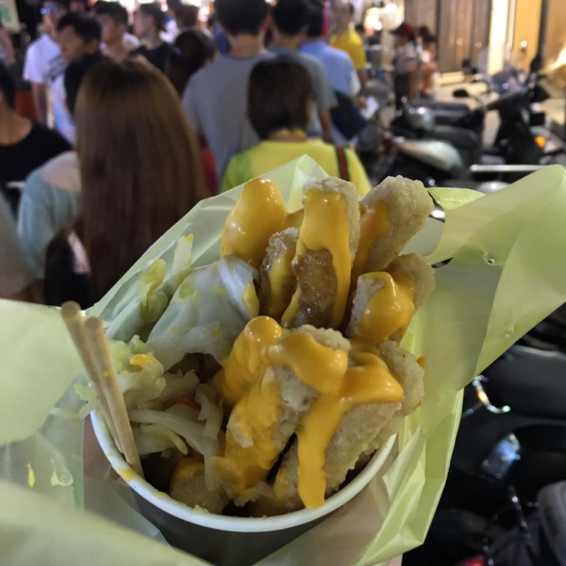

Yangmingshan National Park
First we went to a large stepped hydrangea field. It was very beautiful and the price for the admission ($3) included taking home our own hydrangea!
Around dusk we went to another part of the Yangmingshan National Park that had a trail through a ranch amongst the mountains. We saw a few cows walking around and it reminded me of home. The sun set and we could see Taipei lights!
Yilan
My roommate made last minute plans to go to Yilan, and I tagged along. First we went to the top of a mountain that she knew had paragliding, but unfortunately since we didn't book an appointment and the wind wasn't cooporating that day, we weren't able to actually try it.

Next we went to a famous coffee shop on top of that same mountain and then a museum about Yilan. However, my favorite part of Yilan was probably the lady selling homemade ice cream by the train station! She couldn't speak Mandarin, only Taiwanese (I think), so another lady was attempting to help me translate Mandarin to Taiwanese when I was ordering. Either way I ended up with some homemade pineapple ice cream.
Luodong
In Luodong we went to a cultural center that had a ton of shops and interesting things to see. Later at night (after visiting Yilan), we went to the night market. It was huge and had so many people and great food!
Stinky Tofu
The first time I went to a night market I thought I smelled manure or sewage, but it was actually stinky tofu! Since then I've been afraid to try it, but this week I ate it for the first time. It actually tastes pretty good! The smell is completely different from the taste. I actually ate it at 3 different night markets this week: steamed, fried, and with cheese. Even though it's poopy-smelling fermented tofu, the taste has a lot of umami to it and I actually like it (although I wouldn't eat it every day).
Fruit
Before I came here, I thought I didn't like raw mango. However, in Taiwan, mangos and other fruits are completely different! The first time I tried pineapple here, I didn't even know it was pineapple. Even the bananas taste better here. I've also tried dragonfruit (purple) and lychee, but there are still many more I want to try before I leave. Lots of people sell fruit on the streets.
A link to my full album of Taiwan photos can be found here. Keep checking back for weekly updates!
Questions? Comments? Don't hesitate to contact me!